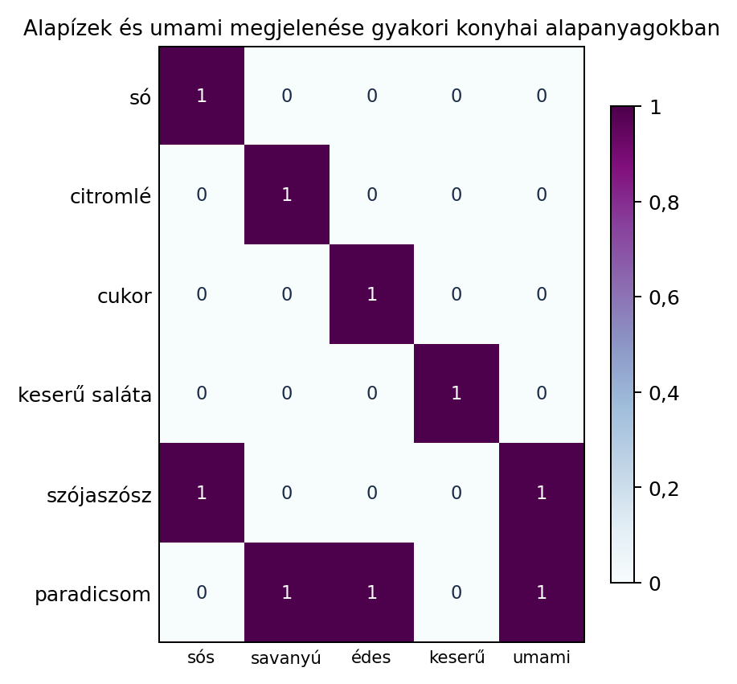

A séf megkóstolja a napi zöldséglevest. A leves illata jó, de az íze lapos. Nem rossz, csak hiányzik belőle valami. A séf fog egy kis sót, beleszór egy csipetnyit, majd néhány csepp citromlevet. Újra kóstol. A leves most már él: a só kiemeli a zöldségek ízét, a citrom felfrissíti, és a leves hirtelen kerek egésszé válik. Ez a fűszerezés, az ízesítés és az ízharmónia munkája. A vendég nem azt érzi, hogy „sós” vagy „citromos” a leves, hanem azt, hogy ízletes. A szakácsnak ezt a hatást kell elérnie minden ételnél, tudatosan, nem találomra.
Az étel íze nem egyetlen anyagból áll, hanem rétegesen épül fel: először az alapízek, majd az aromák, végül a csípősség vagy a frissítő sav. A következő táblázat azt mutatja, hogy néhány gyakori konyhai alapanyag melyik alapízhez járul hozzá erősen.

A táblázatból látható: a só csak sós, a citromlé savanyú, a cukor édes, a keserű saláta keserű. A szójaszósz sós és umami egyszerre. A paradicsom savanyú, édes és umami is lehet. Az összetett ételeknél ezeket az alapízeket kell egyensúlyba hozni, hogy az étel ne legyen lapos vagy egysíkú. Az egyes alapanyagok erőssége eltérő, ezért nincs állandó „minden ételhez két gramm só” szabály: mindig kóstolni kell.
Definíció. Fűszerezés alatt a szárított vagy friss fűszerek (bors, paprika, babérlevél, majoránna, kakukkfű, kapor stb.) és fűszerkeverékek hozzáadását értjük. A fűszerezés fő feladata az aroma, a szín és a tájjelleg kialakítása. A fűszerek sokszor nem alapízt adnak, hanem illatot és mélységet.
Definíció. Ízesítés alatt az alapízek tudatos beállítását értjük: sózás, savanyítás (citrom, ecet, bor), édesítés (cukor, méz, gyümölcs), keserű íz hozzáadása vagy tompítása. Az ízesítés nem csak sót jelent: az ételek ízét gyakran egy kevés sav vagy édes ellenpont teszi teljessé.
Definíció. Ízharmónia az ételben lévő alapízek és aromák olyan egyensúlya, amelyben egyetlen íz sem nyomja el a többit, vagy ha mégis kiemelkedik, az tudatosan történik. Az ízharmónia célja, hogy a vendég az étel jellegét érezze, ne csak a sót vagy a savat.
Szabály. A fűszerezést és az ízesítést kis lépésekben végezzük: kevés ízesítőt adunk az ételhez, elkeverjük, megkóstoljuk, és csak azután adunk még hozzá. A túlsózott vagy túlfűszerezett ételt nehéz javítani, a fűszert pedig nem lehet kivenni. A hosszú főzésű ételeknél a szárított fűszereket (babér, bors) korán adjuk, mert aromájuk lassan oldódik ki; a sót viszont itt is fokozatosan, mert a lé besűrűsödik, és a só koncentrálódik.
Definíció. Sózási arány alatt a só tömegének és az étel tömegének hányadosát értjük, százalékban vagy ezrelékben kifejezve. A gyakorlatban gyakran g/kg vagy g/l formában használjuk. Például 1 kg leveshez 9 g só hozzáadása 0,9%-os sózási arányt jelent. A sózási arány fontos, mert a só befolyásolja a vízmegkötést, az ízérzetet és a tartósítást is.
A sózás aránya nem állandó, recepttől és nyersanyagtól függ. A közétkeztetésben és a diétás konyhán az ajánlott sómennyiség alacsonyabb lehet, ezért az alábbi arányok tanulási értékek (ellenőrizendő: ételreceptúra, HACCP-terv, érvényes táplálkozási ajánlás). A szakács mindig a receptúrában engedélyezett mennyiséget és a kóstolást követi. - Zöldségleves, húsleves: kb. 0,8–1,0% só a kész lé tömegére. - Burgonyapüré: kb. 0,8–1,2% só a burgonya tömegére. - Darált húsból készült étel (fasírt, töltelék): kb. 1,0–1,5% só a hús tömegére. - Nyers, grillezendő hús: a hús tömegére számítva kb. 0,5–1,0% só, de a sózás időzítése is fontos. - Tészták főzővize: kb. 1,0% só a víz tömegére (1 liter vízhez 10 g só), ettől a tészta belül is ízes lesz.
Szabály. Sócsökkentés. Az ételek sótartalmát fokozatosan, hozzászoktatással lehet csökkenteni. A só részben pótolható umami-erős alapanyagokkal (szárított paradicsom, gomba, érlelt sajt, szójaszósz – ha az ételhez illik), fűszerekkel és fűszernövényekkel. A sav és az édes enyhe ellenpontja szintén intenzívebb ízérzetet ad kevesebb só mellett.
Definíció. Umami. Az umami az ötödik alapíz, amelyet a szabad (fehérjéhez nem kötött) glutaminsav (glutamát) és egyes nukleotidok okoznak; ezek érleléskor, szárításkor, hosszú főzéskor szabadulnak fel a fehérjékből. Nem sós, nem édes, hanem húsos, mélységet adó íz. Forrásai: érlelt sajt, szójaszósz, paradicsomkonzerv, szárított gomba, húsleves, élesztőkivonat. Az umami kiemeli a sós ízt, ezért csökkentett sótartalmú ételeknél jól használható.
Definíció. Csípősség. A csípősség nem alapíz, hanem a szájban lévő fájdalom- és hőérző receptorokat ingerlő hatás. Legfontosabb forrása a paprika (kapszaicin) és a bors (piperin). A csípősség fokozza a nyáltermelést és más ízeket is erősebbnek éreztethet, de túlzott mennyiségben elnyomja az étel többi ízét. A csípős ételekhez gyakran édes vagy tejtermékes ellenpont illik.
A fűszerezés időzítése attól függ, hogy a fűszer hol oldódik (vízben, zsiradékban), mennyire illékony (aromája elillan-e), és milyen hőmérsékleten éghet meg. A következő eljárás általános rendet ad.
Eljárás. Fűszerezés és ízesítés lépésrendje.
Higiénia. A fűszerek és fűszernövények sem szennyeződhetnek nyers húslével. Soha ne használd ugyanazt a kanalat nyers húshoz és kész étel fűszerezéséhez. A fűszertartókat szárazon, lezárva tárold, és ne nyúlj bele kézzel, mert a nedves fűszerben elszaporodhatnak a mikroorganizmusok.
Kritikus pont. A kóstolás során a keresztszennyeződés veszélye: ha egy kanalat belemártasz az ételbe, majd a szádba veszed, és visszamártod, a nyálból baktériumok kerülhetnek az ételbe. Eljárás: minden kóstoláshoz tiszta, száraz kanalat használj; forró ételből kis merőkanállal önts egy kóstolópohárba; a kóstolt mintát ne öntsd vissza. Dokumentáld a kritikus pont ellenőrzését a HACCP-terv szerint (ellenőrizendő: üzemi HACCP-dokumentáció).
Allergén. Sok fűszerkeverék rejtett allergént tartalmaz: mustárt, zellert, szezámmagot, néha glutént (csomósodásgátlóként búzalisztet) vagy szulfitot. A vendég tájékoztatása előtt ellenőrizd a fűszer csomagolását vagy a receptúrát. A 14 jelölésköteles allergén közül a fűszerekben leggyakrabban a zeller, a mustár és a szezámmag fordul elő (ellenőrizendő: az adott termék címkéje).
Példa. Zöldségleves sózása.
Adott: 10 adag zöldségleves készül, a kész leves nettó tömege . A receptúra 0,9%-os sózási arányt ír elő. Hány gramm sót kell adni?
Keresett: .
Képlet:
Behelyettesítés:
Eredmény: 18 g só kell a kész leveshez.
Ellenőrzés: ha 2000 g-hoz 18 g sót adunk, akkor 100 g-hoz 0,9 g jut, ami valóban 0,9% (sós ízben mérsékelt, a levesnek még kóstolhatónak kell lennie). Az ételt először 12 g sóval kezdjük sózni, majd a végén kóstolás után adjuk hozzá a maradékot.
Példa. Savkorrekció citromlével.
Adott: ugyanannak a levesnek az íze kissé lapos, a séf 20 g citromlevet ad hozzá. A citromlé hozzávetőlegesen 5% citromsavat tartalmaz (ellenőrizendő: a felhasznált citrom és a lé savtartalma). Mennyi citromsav kerül a levesbe?
Keresett: .
Képlet:
Behelyettesítés:
Eredmény: kb. 1 g citromsav kerül a 2000 g levesbe, ami 0,05%-os hozzáadott savmennyiség. Ez éppen elég a frissességhez, de nem teszi savanyúvá a levest.
Számítási ellenőrzés. A fenti értékek tanulási példák. Az üzemi receptúra szerint a pontos só- és savmennyiség ettől eltérhet, és a kóstolás a legfontosabb ellenőrzés (ellenőrizendő: receptúra).
Munkalap: fűszerezés és ízharmónia gyakorlása
Cél: tanuld meg a sózás, savazás és fűszerezés lépésrendjét egy egyszerű zöldséglevesen vagy paradicsommártáson, és állítsd be az ízharmóniát.
Eszközök és anyagok: 1 liter zöldségleves alap (már megfőtt, sós ízesítés nélkül), só, citromlé, friss petrezselyem, fehérbors, kóstolókanalak, kóstolópoharak, mérleg vagy mérőkanál, jegyzőfüzet.
Biztonsági korlát. Ezt a gyakorlatot tankonyhán vagy oktatói felügyelettel végezd; otthon csak a leírt biztonsági feltételekkel. Forró folyadékkal dolgozz, a kóstolás előtt mindig kis mintát végy, és hagyd hűlni, hogy ne égesd meg a szádat.
Higiéniai előkészület: moss kezet, tisztítsd meg a munkafelületet, készíts tiszta kóstolóeszközöket. A levest tartsd forráspont alatt, fedővel.
Számozott lépések: 1. Mérj ki 10 g sót (ez 1,0% lenne az 1 liter, kb. 1000 g leveshez). Sózz először csak kb. 6 g-mal (a kétharmadánál kevesebbel), mert a leves besűrűsödhet. 2. Keverd el, várd meg 1 percet. 3. Vegyél 10 ml levest tiszta kóstolópohárba, hagyd langyosra, kóstold meg. Jegyezd fel: sós, lapos, keserű, savanyú? 4. Adj hozzá 2 g sót, keverd el, újra kóstolj. Ismételd, amíg a só éppen érezhető lesz, de nem tolakodó. 5. Adj hozzá 5 g citromlevet, keverd el, kóstolj. Ha az íz felfrissült, jó. Ha még lapos, adj még 2-3 g-ot. 6. Vágj 2 g friss petrezselymet, keverd a levesbe, kóstolj. Az aroma akkor jó, ha nem nyomja el a zöldséget. 7. Végül ellenőrizd: a levesben a sós, savanyú és umami egyensúlyban van, az illata zöldséges és friss.
Ellenőrzési pontok: a leves hőmérséklete legalább 75 °C (ellenőrizendő: HACCP-terv); a sózási arány 0,8–1,0% közötti; az íz nem egysíkú, a sav és a só egyaránt érezhető, de egyik sem dominál.
Dokumentálás: írd fel a receptúrába a ténylegesen hozzáadott só, citromlé és petrezselyem mennyiségét grammban, és a kóstolási megjegyzéseket.
Érzékszervi követelmények: az étel íze kerek, egyensúlyban van; a só éppen érezhető, de nem sós; a sav felfrissíti, de nem savanyú; a fűszerek aromája az étel jellegét adja, nem pedig önálló illatként ül a tetején. Az étel színe a felhasznált fűszerektől természetes, a fűszerpaprikás ételek pirosasak, de nem barnák (égett).
Mérhető követelmények: a sózási arány a receptúrában megadott tartományban van (tanulási érték, ellenőrizendő); a kész étel adagolt tömege nem tér el 5%-nál többel az előírt adagsúlytól (ellenőrizendő: üzemi adagolási előírás); a tálalási hőmérséklet meleg ételnél legalább 63 °C (tanulási érték, ellenőrizendő: HACCP-terv); minőségi cél kb. 65–70 °C.
Hiba 1: túlsózott étel.
Ok: a szakács egyben adta hozzá az összes sót, vagy
hosszú főzés után a folyadék besűrűsödött, és a só
koncentrálódott.
Javítás: ha még lehetséges, adj hozzá sótlan alapot,
zöldséget vagy folyadékot; ha a hígítás nem lehetséges, az étel nem
adható ki (selejt, vagy – ha lehetséges – más étel alapanyaga, például
sótlan körettel összedolgozva). A megelőzés: fokozatos sózás,
kóstolás.
Hiba 2: lapos, íztelen étel.
Ok: túl kevés só, vagy hiányzik a sav/umami ellenpont.
Az étel nem rossz, de nincs karaktere.
Javítás: adj kis sót, majd pár csepp citromlevet vagy
más savat; ha még mindig lapos, adj umami-erős alapanyagot, például
kevés paradicsompürét vagy szárított gombaport.
Hiba 3: égett fűszerpaprika.
Ok: a paprikát forró zsiradékba szórták, ahol a
cukortartalma azonnal megégett, keserű ízt adva.
Javítás: az égett paprika keserű ízét nem lehet
teljesen eltüntetni, legfeljebb hígítani. A megelőzés a szabály
betartása: a tűzről lehúzott edénybe, azonnali keveréssel, majd hideg
folyadékkal felöntve.
Hiba 4: túl savanyú étel.
Ok: a szakács túl sok ecetet vagy citromlevet adott,
mert nem kóstolt közben.
Javítás: adj egy kevés édesítőt (cukrot, mézet) vagy
zsiradékot, ami tompítja a savat; ha az étel állaga engedi, adj sótlan
alaplevet.
A tankonyhán Anna marhapörköltet készített. A recept szerint a paprikát a hagyma zsírjára kellett szórni. Anna gyorsan dolgozott: a hagymát megdinsztelte, de a lábast nem húzta le a tűzről, és a paprikát a forró zsiradékba szórta, mielőtt a hideg alaplét hozzáöntötte volna. A paprika azonnal elsötétedett, és egy pillanat alatt keserű szag csapta meg az orrát. A pörkölt később is keserű maradt, hiába adott hozzá több paradicsomot és zöldséget, a keserű ízt már nem lehetett eltüntetni. A séf elmagyarázta: a fűszerpaprika cukortartalma magas, ezért a forró zsiradékban hirtelen karamellizálódik és megég. A helyes eljárás: a lábast lehúzni a tűzről, a paprikát azonnal, folyamatos keverés mellett beleszórni, és rögtön hideg folyadékkal vagy alaplével felönteni. Anna a következő alkalommal ezt követte, és a pörkölt piros, illatos és harmonikus lett.
Tanulság: a fűszer nem önállóan dolgozik; a hőfok, az időzítés és a folyadékpótlás egyaránt része a fűszerezésnek.
Önellenőrzés – válaszok
1. feladat (A). Határozd meg röviden a fűszerezés és az ízesítés fogalmát! Adj mindegyikre egy-egy példát.
2. feladat (A). Számítsd ki, hány gramm só kell 2,5 kg burgonyapüréhez, ha 1,0%-os sózási arányt ír elő a recept.
3. feladat (B). Rendezd helyes sorrendbe a következő fűszerezési lépéseket paprikás mártás készítésénél: 1) friss petrezselyem, 2) fűszerpaprika, 3) só, 4) citromlé. Indokold a sorrendet!
4. feladat (B). Egy ételhez 15 g citromlevet adsz, és annak savtartalma 6%. Mennyi citromsav kerül az ételbe? Mennyi sót adnál 1 literhez, ha 1,0%-os sózási arányt szeretnél?
5. feladat (C). Tervezz fűszerezési és ízesítési tervet egy csökkentett sótartalmú zöldségleveshez! Nevezz meg legalább három, sót részben helyettesítő aromaforrást, és mondd el, milyen sorrendben adnád őket.
6. feladat (D). Képzeld el, hogy a gyakorlati útmutatót követve elrontottad a levest: túl sok ecetet adtál hozzá, és savanyú lett. Mit tennél? Írd le a helyes javítást, és azt is, hogyan előznéd meg a hibát.
1. feladat (A).
Fűszerezés = szárított vagy friss fűszerek hozzáadása aroma, szín,
tájjelleg céljából (pl. őrölt bors, majoránna, babérlevél).
Ízesítés = az alapízek (só, sav, édes, keserű, umami) tudatos beállítása
(pl. sózás, citromlé hozzáadása).
2. feladat (A).
Adott:
,
sózási arány
.
Válasz: 25 g sót kell adni, de kóstolással ellenőrizni.
3. feladat (B).
Helyes sorrend: 2) fűszerpaprika (a zsiradékra, a tűzről lehúzott
edénybe szórva, azonnal felöntve), 3) só (részben, a felöntés után, majd
kóstolva fokozatosan), 4) citromlé (a végén, kóstolással), 1) friss
petrezselyem (a legvégén, tűz elzárása után).
Indoklás: a só hosszú idő alatt egyenletesen eloszlik; a paprika
égésveszélyes, ezért különleges; a sav a végén őrzi a frissességet; a
friss bazsalikom illóolaja hőben elillan.
4. feladat (B).
Savtartalom:
citromsav.
Só 1 literhez 1%-on:
.
5. feladat (C).
Terv (példa):
- A főzés elején adj kevés sót (a folyadék 0,3%-át), mert a zöldségek
sót igényelnek.
- Adj umami-erős anyagokat: kevés szárított paradicsom, szárított
gombapor, egy darabka élesztőkrém vagy érlelt sajt kéreg (ha az ételhez
illik).
- A közepén adj szárított fűszereket: babérlevél, bors, kakukkfű.
- A végén savat: pár csepp almaecetet vagy citromlevet, és friss
petrezselymet.
Ezek az aromaforrások fokozzák az ízt anélkül, hogy a só mennyiségét
növelnéd. A kóstolás és a fokozatosság mindvégig kötelező.
6. feladat (D).
Ha a leves túl savanyú lett: adj hozzá 1-2 g cukrot vagy egy kevés
mézet, esetleg egy kevés sótlan zöldségalaplevet; keverd el, kóstolj, és
csak szükség esetén ismételd. A megelőzés: az ecetet kis adagokban,
kóstolással, a főzés végén add, és jegyezd fel a pontos mennyiséget.
A fűszerezés a szárított és friss fűszerek hozzáadása; az ízesítés az alapízek tudatos beállítása sóval, savval, édesítővel, keserűvel vagy umami-forrással. Az ízharmónia azt jelenti, hogy egyetlen íz sem nyomja el a többit. A sózási arányt gramm/ételtömeg százalékban adjuk meg; tanulási értéke leveseknél például 0,8–1,0%, de az üzemi receptúra és a kóstolás az irányadó (ellenőrizendő). A sót fokozatosan, a fűszereket a hővel szembeni viselkedésük szerint időzítve adjuk: a szárított fűszereket korán, a fűszerpaprikát a tűzről lehúzva, a friss fűszernövényeket a végén. A savakat és az édesítőt a főzés végén, kóstolással egyensúlyozzuk. A kóstolás során mindig tiszta eszközt használunk, kis mintát veszünk, és a mintát nem öntjük vissza. Továbbvitt eredmény. A kóstolás és ízkorrekció rendjét (sósság, savasság, keserűség, édesség, umami, csípősség, aroma ellenőrzése) a Befejező műveletek: készentartás, adagolás, tálalás, díszítés alfejezetben használjuk a tálalás előtti végső ízellenőrzéshez.
Forrástípusok. NÉBIH útmutatók a közétkeztetés sócsökkentéséről és az élelmiszer-higiéniai gyakorlatról; Magyar Élelmiszerkönyv (fűszerek leírása); klasszikus konyhatechnológiai tankönyvek a fűszerezés időzítéséről; üzemi HACCP-terv a kóstolás keresztszennyeződésének ellenőrzéséhez.
Ellenőrizendő pontok. A sózási arány konkrét százalékai (0,8–1,0% stb.) receptúrától függenek; a citromlé savtartalma (5-6%) függ a citromtól és a tárolástól; a kóstolási minta higiéniai szabályának konkrét leírása az üzemi HACCP-tervben lehet pontos. A fűszerallergének köre a termék címkéjén ellenőrizendő. A tálalási hőmérséklet és a sócsökkentési ajánlások forrása a hatályos hazai és európai útmutatókban ellenőrizendő.